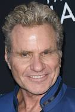

PERSONAGENS
Daniel Larusso
Johnny
Kreese
Silver
Miguel

Nesta aclamada série que é continuação dos filmes Karatê Kid,
Daniel e Johnny retomam a rivalidade dos tempos de escola.
Estrelando:Ralph Macchio, William Zabka, Xolo Maridueña
Criação:Josh Heald, Jon Hurwitz, Hayden Schlossberg
Trinta anos já se passaram desde que Daniel Larusso (Ralph Macchio) e Johnny Lawrence (William Zabka) se enfrentaram pela última vez dentro de um circuito, mas mesmo após tanto tempo assim, a rivalidade entre os dois acaba retornando com força total depois que Lawrence decide reconquistar a glória perdida através de seu dojo Cobra Kai.
Há alguns poucos anos, o YouTube Originals resolveu investir na série que continua os eventos vistos nos clássicos filmes da franquia Karate Kid. Com uma trama nostálgica, acompanhamos a busca por redenção de Johnny enquanto o agora bem-sucedido Daniel tentava superar seus próprios desafios sem a ajuda de seu eterno mentor, o Sr. Miyagi.
O enredo da série tem um teor forte de nostalgia, mas também traz novos elementos baseados em como os tempos mudaram desde que os filmes foram ao ar, algumas décadas atrás. Porém, agora estes personagens estão todos crescidos e contam com responsabilidades diferentes.
Daniel, o grande herói dos filmes, é um homem bem sucedido que perdeu completamente seu encanto pela vida que tinha, enquanto Johnny aqui é o vilão caído que precisa reconstruir a sombra daquilo que deixou de ser a partir do momento em que foi derrotado.
Inclusive, há quem defenda fortemente a tese de que Daniel sempre foi na verdade o vilão da trama, já que ele foi o primeiro a implicar pessoalmente com Johnny e no final de tudo ainda o venceu com um golpe ilegal no torneio, então os produtores aproveitaram para brincar um pouco com esta inversão de papéis. Logo, espere sim bastante luta, mas saiba que vai se deparar ainda com a vida adulta.
William Zabka e Ralph Macchio revivem seus papéis nesta sequência dos filmes Karatê Kid que foi indicada ao Emmy.
Baixe e assista onde estiver.
Séries dramáticas, Comédias para a TV,
Séries de ação e aventura, Séries dos EUA
Nostálgico, Instigantes, Comovente
Para saber mais, confira os bastidores
em Tudum.com
Ralph Macchio
William Zabka
Xolo Maridueña
Martin Kove